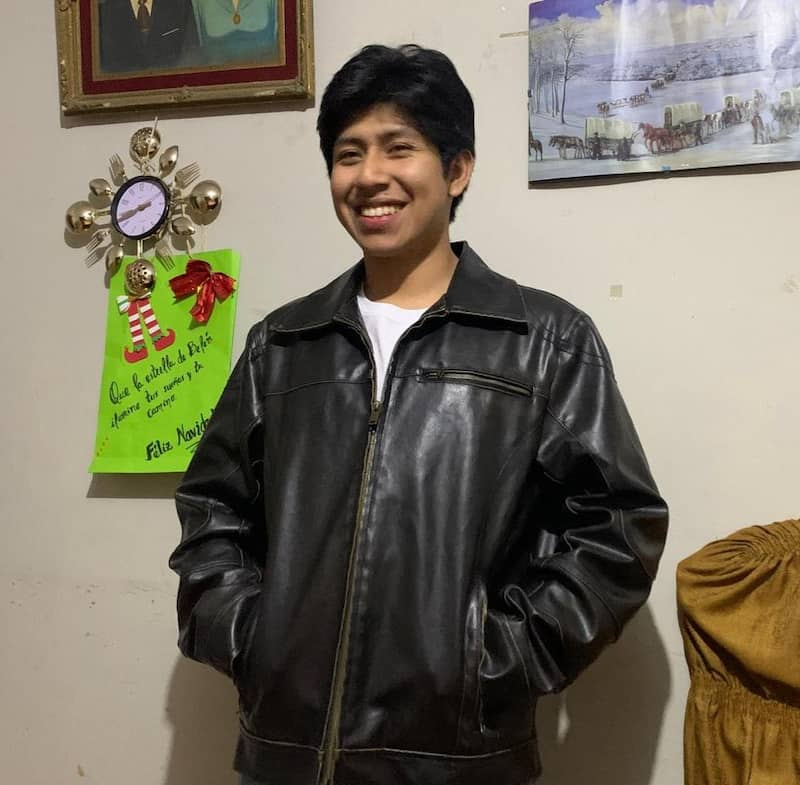

Brigham Spencer Carrera Ventura | WDD 130
Hello! My name is Samir Huertas and I am from Barranca, Peru. I am currently studying Software Development at BYU. I am passionate about technology and love learning how software can solve real-world problems. In my free time, I enjoy going to the gym, listening to music, and improving my coding skills. I also love helping others and believe in always being kind and respectful. I am a member of The Church of Jesus Christ of Latter-day Saints, and my faith plays an important role in my daily life. I’m excited to keep learning and growing as a developer and as a person.